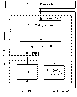
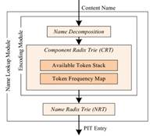
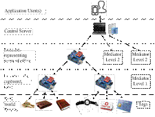

|
Name |
Title
|
Abstract |
Poster / Videos |
|
Divya
Saxena |
Design
and Verification of an NDN-Based Safety-Critical Application: A Case Study
With Smart Healthcare |
NDN allowed users
to fetch data by names irrespective of the actual hosting entity connected
through a host-specific IP address. NDN well suits the content- centric
pattern of machine-to-machine (M2M) communications predominantly used in IoT.
In this paper, we leverage the basic feats of NDN architecture for designing
and verification of an NDN-based smart health IoT (NHealthIoT) system. NHealthIoT
uses pure-NDN-based M2M communication for capturing and transmission of raw
sensor data to the home server which can detect emergency healthcare events
using Hidden Markov Model. Emergency events are notified to the cloud server
using a novel context-aware adaptive forwarding (Cdf)
strategy. Post emergency notifications, and user health information is
periodically pulled by the cloud server and by other interested parties using
NDN-based publish/subscribe paradigm. The cloud server carries out long-term
decision making using probabilistic modeling for detecting the possibility of
chronic diseases at the early stage. We extend the workflows intuitive formal
approach model for verifying the correctness of NHealthIoT
during the emergency. We evaluate the cdf strategy
using ndnSIM. Moreover, to validate and to show the
usability of NHealthIoT, we develop a
proof-of-concept prototype testbed and evaluate it extensively. We also
identify some research challenges of the NDN-IoT for researchers. Please cite it as
“D. Saxena, V. Raychoudhury,
Design and Verification of an NDN-Based Safety-Critical Application: A Case
Study With Smart Healthcare, IEEE Transactions on Systems, Man, and
Cybernetics: Systems, vol. pp, no. 98, July 2017, pp. 1-15” |
|
|
Divya
Saxena |
Named
Data Networking A Survey |
Internet was
developed as a packet data network where users and data sources (server) with
specific IP addresses interacted over a pre-established communication
channel. This model of client–server data communication has evolved
into a peer-to-peer mode of data sharing in recent times. Applications like,
YouTube, Bit Torrent, social networks have revolutionized the idea of user
generated contents. Modern users care only for specific data items
irrespective of their sources. So, the idea of using IP addresses to identify
servers hosting a particular content is losing its importance. Moreover, want
of IP addresses is a challenging issue haunting the Internet community since
long. The need of the time is a content-centric networking platform where
data hosts are of less importance, and Named Data Networking (NDN) has been
proposed to that end. NDN allows users to float a data request without any
knowledge about the hosting entity. NDN can handle user mobility, security
issues more efficiently than the current Internet. Although NDN has been
proposed in 2010, so far, there is no survey paper studying its architecture
and various schemes proposed for its different characteristic features, like,
naming, adaptive forwarding and routing, caching, security, mobility, etc. In
this paper, we introduce a novel taxonomy to study NDN features in depth. We
have also covered several NDN applications. We conclude our survey by
identifying a set of open challenges which should be addressed by researchers
in due course. Please cite it as
“D Saxena, V Raychoudhury,
N Suri, C Becker, J Cao, Named Data Networking A Survey, ELSEVIER COMPUTER
SCIENCE REVIEW, pp. 15-55, January 2016” |
[PDF] |
|
Divya
Saxena |
N-FIB:
Scalable, Memory Efficient Name-based forwarding |
Though NDN has
several benefits over traditional IP-based Internet, storing names instead of
IP addresses has two major bottlenecks. While it consumes significantly large
memory, it incurs higher search and update time. Another issue is the fast
growth of routing table size through which FIB will not fit in existing
routers’ line-card memory. Moreover, frequent updates to the FIB can
degrade the packet delivery performance. In this paper, we propose a scalable
and memory efficient Patricia trie based name
forwarding scheme (called, N-FIB) for FIB. N-FIB supports FIB aggregation to
significantly minimize the impact of large FIB size and high FIB update cost.
Moreover, N-FIB is reducing routers’ computation and memory overhead,
while supporting strong forwarding correctness. Please cite it as
“D. Saxena, V. Raychoudhury,
N-FIB: Scalable, Memory Efficient Name-based forwarding, ELSEVIER JOURNAL OF
NETWORK AND COMPUTER APPLICATIONS (JNCA), September 2016” |
 [PDF] |
|
Divya
Saxena |
Radient: Scalable, Memory Efficient Name
Lookup Algorithm for Named Data Networking |
NDN router stores
all incoming content requests ('/'-delimited string components) in the
Pending Interest Table (PIT) until they are satisfied. Multiple requests for
the same content are merged in a single PIT entry and when the requested
content is available, it is forwarded simultaneously to all the requesters.
Although NDN has several benefits over the existing IP-based network, replacing
IP addresses with names increases memory consumption and lookup cost. One
possible way to restrict memory usage is to use name encoding, i.e., to
encode identical components of a name with a unique integer. In this paper,
we propose a novel memory efficient name encoding scheme (called, Radient) for PIT and evaluated it extensively. Please cite it as
“D. Saxena, V. Raychoudhury,
Radient: Scalable, Memory Efficient Name Lookup
Algorithm for Named Data Networking, ELSEVIER JOURNAL OF NETWORK AND COMPUTER
APPLICATIONS (JNCA), 2016” |
 [PDF] |
|
Divya
Saxena |
Implementation
and Performance Evaluation of Name based Forwarding Schemes in V-NDN |
Recently,
researchers proposed the use of a content-centric approach, Named Data
Networking (NDN), for enhancing the efficiency of vehicular ad-hoc networks.
In this paper, we implement IP-based data forwarding schemes, such as
Epidemic, Spray & Wait, and Adaptive Forwarding using NDN on the
sparsely-connected real vehicular testbed. We also evaluate these NDN-based
forwarding schemes to study the performance of name based forwarding for
retrieving and disseminating data. Our experimental results obtained through
real vehicular testbed validate the performance and usability of NDN over
VANET. Please cite it as
“D. Saxena, V. Raychoudhury,
C. Becker, Implementation and Performance Evaluation of Name based Forwarding
Schemes in V-NDN, In Proceedings of International Conference on Distributed
Computing and Networking (ICDCN 2017), January 4-7, 2017, Hyderabad,
India.” |
VANET Testbed |
|
Divya
Saxena |
An
NDNoT based Efficient Object Searching Scheme for
Smart Home using RFIDs |
The use of content
names for communication support name-based routing, in-network caching, and
security which make the NDN more suitable for IoT. In this paper, we propose
a NDN-based searching mechanism (named, Search-NDNoT),
which can be used to find any smart item augmented with the RFID in
real-world in real-time. An energy-efficient data aggregation algorithm is
also proposed to maintain up-to-date data on the server. Our proof-of-concept
prototype shows the usability of our proposed system. Please cite it as
“D. Saxena, V. Raychoudhury,
C. Becker, An NDNoT based Efficient Object
Searching Scheme for Smart Home using RFIDs, In Proceedings of International
Conference on Distributed Computing and Networking (ICDCN 2017), January 4-7,
2017, Hyderabad, India” |
 [PDF] |
|
Alark
Sharma |
Socio-Physical
Interaction Network |
Recent years have
witnessed the rapid advances in embedded devices, wireless sensing
technologies (e.g., RFID and wireless sensor networks (WSNs)), and wireless
communications and mobile computing. The widespread deployment of integrated
sensing, computing, and communication systems are resulting in smart motion
detectors, door locks, light bulbs, alarms, vehicles, wallets, and key rings.
Moreover, we are also experiencing stupendous growth in smart phone usage in
recent years which are interconnecting people everywhere and all the time.
People are becoming inseparable from the smart phone they carry and can be as
well identified by their smart phones. So, in practice, physical objects
including human being are all transformed into smart objects, and it is foreseeable
that, in the near future, they will be interconnected to form an
Internet-of-things (IOT). Relationships between smart objects in such an
Internet-of-things environment can be manifold, object-to-object,
object-to-human, and human-to-human. Object-to-object relations can be like,
‘near’, ‘far’, ‘above’,
‘below’, ‘beside’, etc. Object-to-human relations can
be like, ‘owned by’, ‘belong to’, ‘carried
by’, etc. Finally, human-to-human relations can be normal social
relations, such as, ‘friends’, ‘family members’, etc.
In order to simplify the smart object modeling, together we call all such
relations as social relations between smart objects (including human). So,
the aim of the proposed project is to capture different types of social
interactions among smart objects in the physical world and to develop a
combined socio-physical interconnection network (SPIN) platform to enable
searching, browsing, and tracking of all such objects. Using such a system,
various useful applications can be developed. Examples of such applications
are smart home, office, city; healthcare for elderly and disabled; security
system for large public areas, like airports and shopping malls; intelligent
transportation system, etc. |
Get the Paper
(Full Version) and the PPT
|
|
Sandeep Sandha |
Event-detection
and Resolution through Decentralized Co-ordination of Intelligent Entities in
Smartphone-based Remote Elderly Health Monitoring System |
In order to provide
round-the clock monitoring of elderly patients, we propose a remote
Health Monitoring System for Elderly patients (EHMS). The EHMS system uses
embedded sensor nodes, such as, pulse rate, blood pressure, glucose level,
and pollen count sensors, etc., to monitor the vital signs and the
surrounding environments of a particular patient. The sensed data is
initially sent to the user’s smartphone, which, based on the past
health history of the patients, looks for abnormal sensor data readings
(called as, events). Events are detected in a cascading manner, stage by
stage, so that, abnormal pulse rate value may trigger checking of blood
pressure level, and so on, such that, the energy cost of the sensor nodes can
be minimized. Events are detected in real-time and by the smartphone carried
by patients. The smartphone then takes proper decision regarding future
actions and asks for feedback from the user through multi-modal and
convenient user interfaces. User responses are recorded for self-learning
purposes and for future use. The collected sensor readings are later sent to
a backend server for further processing. All data exchanges are done in a
secured manner. The contribution of this project is highly relevant and has
special significance to both the industrial community and the society. The
results and findings of this project will have impact on a broad range of
research areas including mobile and pervasive computing, distributed systems,
smart healthcare, and big data management. Goals The goals of the proposed
research are to decide critical health situations of elderly patients through
collaborative interaction of multiple embedded and wearable micro-sensors to
inform patients about potential threats (pollen count, pollution, etc) in
indoor and outdoor environments based on their past health history to adopt
smartphone based decision making approaches for emergency actions and to use
simple multi-modal interfaces to facilitate interaction between patients and
caregivers |
|
|
Arpit Neema |
Development
and implementation of IOT framework |
Technical advances
in sensor networking as well as mobile computing and communications are
aiming to transform our physical environment into a smart space. Our
real-life objects augmented with sensor nodes and RFID tags can be
interconnected with each other to form an Internet-of-Things (IoT). Such an
IoT can be used for many intelligent application developments. Soon in the near
future, in addition to finding information in the cyber space of the
Internet, it will be desirable for people to identify, search, and browse
information about objects in the physical world. We can foresee increasing
demand of this technology in our everyday life. This project is set as a
significant step towards realizing such a dream. In this project, we will
build an IoT and will study the research issues and developmental challenges
associated with it. We will also develop one or more prototype proof-of-concept
applications to prove the usability of the IoT framework. Associated with the
demo applications, we will develop mechanisms and algorithms to support those
smart applications built on the IoT framework. More specifically, we will
study the related work, propose an IoT framework, design the key mechanisms
and algorithms, and develop a prototype with example applications for
demonstration. |
|
|
Preetika
Rani |
Infectious
Disease-Outbreak-Period Detection Using Discrepancy Scores |
One of the most
challenging problems for people working in health departments is to detect the
disease outbreak in environment. An outbreak is when there are more cases of
disease or infection as compared to normal over an area or particular group
of people, over a period of time. It is assumed that cases are related to
each other such as having same cause or source of infection. People working
in public health departments investigate outbreaks for finding the source,
cause, prevention, avoidance of a particular or unknown disease as early as
possible. During an outbreak the numbers of cases of illness are more as
compare to normal illness. Detecting these patterns at later stage is
trivial, but detecting these patterns in its early stage can mitigate the
effects. Health Departments may learn about any outbreak by different sources
like doctors complaining large cases, chemist reporting increased demand of
particular medicines, a person observing illness symptoms frequently in the
society etc. Other than these, machine learning techniques can be used for
analysis of public health surveillance data. |
|
|
Sandeep
Sandha |
Crowdsourcing
based Context-aware Panoramic Map Generation for Smartphone Users |
Recent advances in
smartphones and location-aware services necessitate identifying logical
locations of users, in terms of their surroundings, instead of raw location
coordinates. In this paper, we have proposed CROWD-PAN-360 (CP360), a novel
smartphone-based system to generate 360-degree panoramic map of a querying
user for his unfamiliar surrounding using crowd-sourced images. The objects
(logical locations) appearing in the images are identified using manually or
automatically generated tags. The system is context-aware and it
intelligently associates user location coordinates with several smartphone contexts,
like acceleration and orientation. CP360 can significantly reduce GPS
positional errors for even cheap low-end smartphones and can identify the
user surroundings very efficiently. We extensively tested the system in both
indoor and outdoor environments of IIT Roorkee campus using Android
smartphones over a dataset of more than 6000 crowd-sourced images of nearly
70 objects (departments, hostels, cafeteria, etc.) and CP360 generates the
panoramic map with an average accuracy of 92.2%. |
|
|
Sandeep
Sandha |
Automatic
Event Scheduling in Mobile Social Network Communities |
In this project, we
have implemented an autonomic system for activity scheduling in Mobile Social
Network communities. We have implemented this, using Model II as described in
the Research Paper. We have used Samsung Chord API for making network
connections among the users who form a community. This API connects devices
in a private channel and forms a group of people in a local area. Devices
running Chord-based applications discover each other using a UDP(User
Datagram Protocol) broadcast based discovery, and then use a TCP-based
protocol stack to create a reliable, peer-to-peer local communication
network. This network can be used to share data, including text, binary
messages and files, with selected members of the network. Without using the
cloud or server, it instantly supports sharing 1-to-1, 1-to-many or
many-to-many. |
|
|
Sandeep
Sandha |
Crowd-sourcing Portal |
We set up a unique
complaint portal, the online system of the collecting the complaints, issues
for all the members of IIT Roorkee. The more organized and systematic way of
dealing with the issues speedily. Technology
development has enabled powerful, less chaotic and speedy transactions which
have penetrated in almost all fields. For eg. Shares used to be sold by hard
copy transactions in about 45 days but now through demat
system it is a matter of seconds. similarly E-commerce field has undergone a
revolution with ever increasing number of people using online stores for
buying things of daily use and they don’t need to go to market and
search for them. Upcoming but not so popular fields like e-gold, e-metal are
also starting to take roots in the system. Non financial transactions like
applying for jobs, applying for nationality, certificates of income domicile,
many examinations etc. are all now starting in government and private
institutions. |